Potting Bench
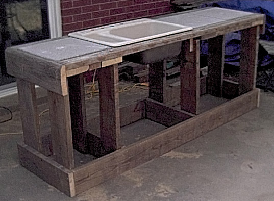
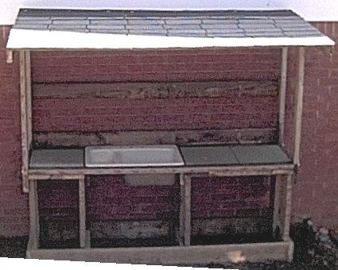
I have the plans as a PDF and as a PPT. The following instructions should be used in
conjunction with the PDF document.
Before beginning this project please take a look at the following pages. These pages contain things about simple
carpentry I learned. When you are finished you can visit the Main Page:
1) Wood Is Not The Size They say it is
2) The right tools are important, and they really
don't cost that much
3) Technique, a few hints and tricks help make the
job go easier.
Rose wanted a potting bench so that she could do gardening tasks outside. A sink was needed for washing and for making dirt (and presumably mud pies ;-)).
She wanted a roof in case it rained, a sink and some nice surfaces that were easy to clean. We discussed it and she said paver stones would work nicely
for a hard surface and something that was easy to remove and clean. The bench was constructed so that a standard cast iron sink could be installed with
the faucets and allow water to be hooked up off of a standard outside faucet tap. Also some boards were run across the back for hanging different garden
tools. She had the specifications and I went about creating the design consulting with her to make sure that it was what was described.
This potting bench complete with sink, faucets and sprayer sits in a nice cool spot on the
shady north side of our backyard near an outside spigot. I recommend finding the sink
first, adjusting your measurements according to its dimensions. We found this very solid
one at a salvage yard for $35.
Page 1 - First we make the bottom frame as seen at the top of page 1. Cut two
ea 1.5 X 7.25 X 25.5" boards, cut two 1.5 X 7.25 X 88.5" boards and cut two
1.5 X 7.25 X 22.5" boards. You should have six boards. Find a nice
level surface with a step that is long. Place the 1.5 X 7.25 X 25.5" board
up against the step. Next put the two 1.5 X 7.25 X 88.5" boards up against
the 1.5 X 7.25 X 25.5" board. Finally put the second 1.5 X 7.25 X 25.5"
board up against the two 1.5 X 7.25 X 88.5" boards. You should have what
looks like the top half of page 1 minus the interior frame boards. Using 2.5"
deck screws and keeping this frame square, screw the front 1.5 X 7.25 X 25.5"
board into the two 1.5 X 7.25 X 88.5" boards. Turn the entire frame around
so that what was the front board is now braced against the step and screw the other
1.5 X 7.25 X 25.5" board into the two 1.5 X 7.25 X 88.5" boards. You
should now have a nice square. Take the two interior boards and arrange them as
shown in the top of page 1. Be sure to measure the distance for the interior
boards carefully as these are used to support your upper deck of the potting bench.
Also make sure that these boards are as straight as possible, if they are not straight
then when you attach the four interior support boards they will lean when attached.
Now secure all these together with your deck screws. Now cut eight each 1.5 X 7.25
X 33" boards. The height of these boards gives a standard 36" counter
top. You can adjust these boards as needed to make a higher or lower counter top
. Hold them in place with your clamps and attach them to the frame as shown on
page 1 and in this picture:
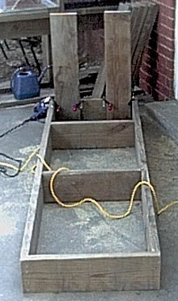
Finally it should end up looking like this:
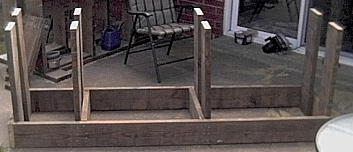
Page 2 - Now make the counter top. First cut the two 25.5 X 1.5 X 7.25" boards,
the two 21.75 X 1.5 X 7.25" boards and the 36.25 X 1.5 X 3.5" board. Place
the 1.5 X 7.25" boards down on the cement to form the square as seen on page 2.
Now place the 36.25 X 1.5 X 3.5" board on top (as shown in the diagram) and secure the
36.25 X 1.5 X 3.5" board to the 1.5 X 7.25" boards. The 21.75 X 1.5 X
7.25" board will be secured to the frame on page 3. This portion of the frame
will hold the two 18" paver stones, one of the working surfaces of the bench.
Now cut the two 25.5 X 1.5 X 7.25" boards, the two 3.75 X 1.5 X 7.25" boards and
the 18.25 X 1.5 X 3.5" board. Again, lay the 1.5 X 7.25" boards on the
ground and secure the 18.25 X 1.5 X 3.5" board as shown on page 2.
Page 3 or Page 4 - You now should decide whether you want the "large" working
area on the left or on the right. The long 88.5 X 1.5 X 3.5" board is at the
front of the potting bench. If you want the large working space on the right you
will need to look at page 3. If you want the large area on the left then you will
need to look at page 4. Cut the 88.5 X 1.5 X 3.5" board. Put the two
frames you made (page 2) on the ground. Put your three 18" paver stones in
the frame (for a fit check) and secure the 88.5 X 1.5 X 3.5" board to the two
frames. It should look like:
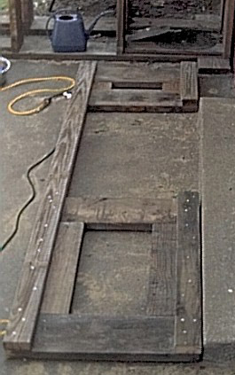
Page 3 or Page 4 (Continued) Now put the counter top on top of your frame. Cut
the two 25.5 X 1.5 X 7.25" boards. Clamp the 25.5 X 1.5 X 7.25" board
to both the lower frame and the counter top on both sides and secure these with 2.5"
deck screws. Cut the 22 X 1.5 X 7.25" boards, clamp them in place to the inside
frame and counter top and secure them with 2.5" deck screws. Your counter top
should now look something like:


Page 5 - Now make the roof for the potting bench. Cut four 48 X 1.5 X 3.5" boards
and two 46 X 1.5 X 3.5" boards. Lay two 48 X 1.5 X 3.5" boards and one
46 X 1.5 X 3.5" board on the ground so that it looks like the left side of page
5. Secure these with 2.5" or 3" deck screws. Now make the right
side of the roof (please note that the boards are put together opposite of the left
side).
Page 6 and Page 7 - This is the frame with extra support boards. If you are further
"up north" and get much ice or snow you should consider these additional boards.
Cut three 91.5 X 1.5 X 3.5" boards and attach them as shown on pages 6 and 7.
Pages 8 and 9 - Cut the 94.5 X 1 X 5.5" boards and attach them as shown on pages 8
and 9. Cut the back 91.5 X 1 X 5.5" boards and attach them as shown, secure the
three boards at the bottom, middle and top. These boards are to help with the structure
but they are also for hanging hooks on to hold "stuff". Your roof should
now look like:
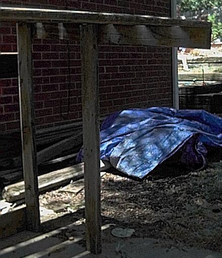
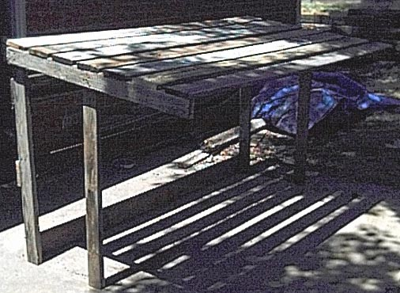
Pages 8 and 9 (Continued) - Now put your shingles on the roof. I did not use tar
paper underneath the shingles but it is probably a good idea to put that underneath to seal
the bottom from leaks. When you put on shingles start at the bottom and work your way
up the roof. The shingles will overlap about 1/2 of the shingle. There are special
roofing nails you should use called "Metal Square Cap Roofing 3/4 inch":
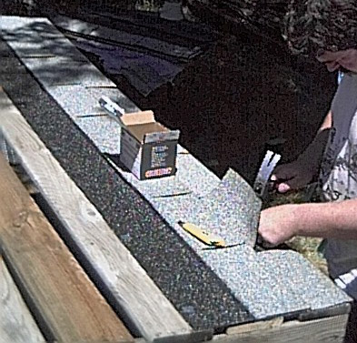
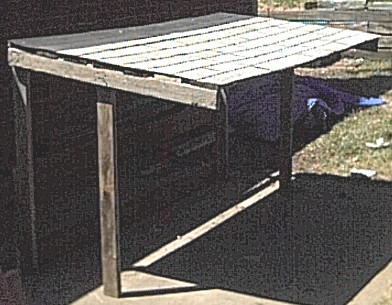
Page 10 - Now (with someone (or two) helping) put your roof on top of the potting bench.
The back support should line up with the back of the potting bench and the front support
should line up with the front of the potting bench. Secure these with four door hinges.
I bought brass hinges in the hopes that they will not rust. After the hinges were installed I
removed the hinge pin and greased each hinge pin with Lithium Grease (white grease) and put the pin
back in. The potting bench should now look like:
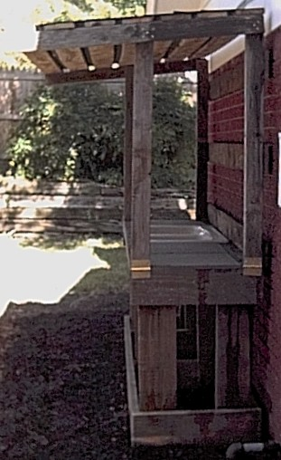
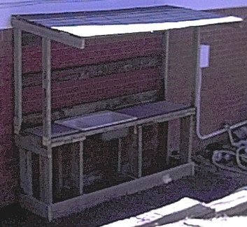
Finally you will need to buy the sink fixtures. The sink shown has four holes in it, one
for hot, cold, and two so that the sprayer can go down and come back up through the hole in
the sink. Any sink fittings at your favorite plumbing supply or home improvement center
should work for this. You will also need a garden hose (to hook up to your outside
faucet) and a hose adapter that
will convert from a MHT (male hose thread) to a Fips (Female pipe thread adapter). You
will also need Plumbers Tape (teflon tape) to wrap around all plumbing connections so that they
will not leak when you put everything together. A
Hose Faucet
Manifold
is very handy so that you don't have to use up your outside faucet just for your potting
bench. You will also need some plumbing for underneath the sink to redirect the water.
I used PVC pipe and the water / stuff goes into a 5 gallon bucket. If you wanted to get
fancy you could attach a garbage disposal to the sink to grind up organic material and make it
very fine for potting use.
Main Page